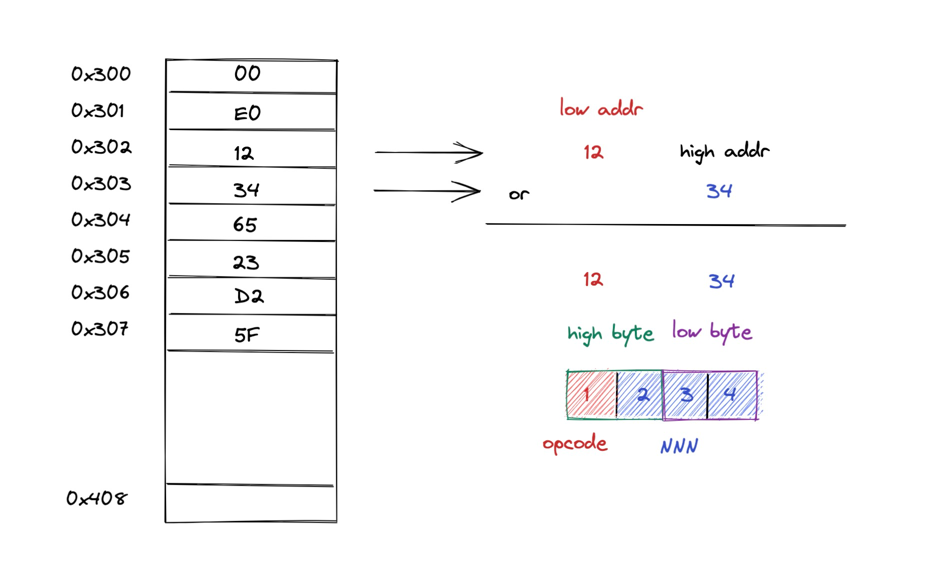

CPU 与指令¶
CPU 简介¶
计算机最重要的组成部分是 CPU(Center Process Unit)。CPU 主要包含运算器(ALU)，控制器(Control Unit)，寄存器(Register)和时钟。
运算器主要是 ALU，用于进行代数运算和逻辑运算。代数运算是加减乘除平方等，逻辑运算是与或非的运算。 控制器主要负责对指令的译码，并对指令需要执行的各个操作发出控制信号。比如和内存总线交互，读写内存数据。
x
寄存器，顾名思义，主要用于将内存读取的数据或指令暂寄的地方。计算机的存储系统像是金字塔，容量越大读写速度越慢。寄存器就在 CPU 内部，它容量很小，但是读写速度很快。最后是 CPU 的时钟，指示 CPU 的时钟周期。
CPU的几个部件，相互合作，完成计算工作。简化的CPU工作流可以总结为取址执行
。在CPU的时钟周期内，控制器从PC寄存器的指令地址的内存读取数据，然后解析指令，并执行指令的语义。此外，在执行指令的时候，涉及到内存读写，缓存控制，外设IO通信等多种多样的工作任务。 1
Chip8的CPU比较简单，模拟器就可以根据模拟器架构 介绍的 CPU 进行实现。
CHIP8 指令¶
Chip8 的指令很简单，一共有35条指令。2 每一条指令都是2-byte大小。指令是大端字节序(Big-Endian)。3
Chip8 的内存是地址是由小到大。因此 Chip8 的指令，其低地址表示高字节，高地址表示低字节。其中高字节的前 4-bit 表示操作码(OPCODE) ，每一个 OPCODE 表示不同类型的指令。高字节的后 4-bit 和低字节前 4-bit 通常是指待通用寄存器，最后4-bit是立即数。也有的指令，除了OPCODE，剩下的都是立即数。
如图所示，指令0x1234在内存的存储是： 0x302(低地址)存储了值0x12，0x303(高地址)存储了值0x34。低地址的0x12 左移8bit，然后与高地址0x34进行或(|)
操作，得到最终指令为 0x1234。即 0x12 << 8 | 0x34
指令0x1234的高字节是0x12，高4-bit是0x1，为 opcode。0x1的 opcode 表示执行跳转。0x12的低 4-bit是0x2，与低字节的0x34组成的是0x234
为12-bit的立即数。最终这个指令表示 跳转地址0x234。
下面另外几种 decode 指令举例：
指令描述 |
类型 |
指令解析 |
含义 |
示例 |
说明 |
|---|---|---|---|---|---|
00E0 |
Display |
opcode：0 |
清屏 |
00E0 |
清除屏幕 |
1NNN |
Flow |
opcode：1， 12-bit立即数：NNN |
跳转到地址 NNN |
1234 |
跳转到地址 0x234 |
6XKK |
Const |
opcode：6， 寄存器：X，8-bit立即数：KK |
设置 Vx 的值为 KK |
6523 |
设置 V5的值为 0x23， V5 = 0x23 |
DXYN |
Display |
opcode：d， 寄存器：X，Y, 4-bit立即数：N |
绘制一个sprite，坐标为 (Vx, Vy)， 从地址寄存器读取 N byte数据 |
D25F |
绘制一个。sprite，从坐标(V2, V5)开始，读取地址寄存器里 F byte 数据 |
对于指令，我们可以实现是一个 Instruction 的类来做指令的解码, 该类提供各种解码的方法
class Instruction:
def __init__(self, val: int):
self.val = val
def decode_opcode(self) -> int:
pass
def decode_x(self) -> int:
pass
def decode_y(self) -> int:
pass
def decode_n(self) -> int:
pass
def decode_kk(self) -> int:
pass
def decode_nnn(self) -> int:
pass
def decode(self):
pass
指令循环 fetch-decode-execute¶
fetch¶
Chip8 模拟器执行 CPU 循环的时候，进行取指执行。下面是其工作流的代码：
CPU 指令周期方法：
def cycle(self):
# 取指
self.fetch()
# 解码
self.decode()
# 执行
self.execute()
CPU 取指方法：
def fetch(self):
high_byte = self._memory.ram[self._reg_PC]
low_byte = self._memory.ram[self._reg_PC + 1]
instruction = (high_byte << 8) | low_byte
self._reg_PC += 2
self._IR = Instruction(instruction)
通过 PC 寄存器分别读取读取高低字节数据，然后把高字节左移 8-bit 和 低字节数据进行或操作。因 Chip8 每条指令2-byte，取指完毕之后，PC 自增 2，指向下一条需要执行的指令的高字节。指令获取之后，就存储在指令寄存器IR中。
decode¶
CPU 指令 decode 相关方法实际上是调用了 Instruction 的各类decode方法
TODO decode 分析
def decode(self):
self._IR.decode()
CPU的 decode 方法调用了 Instruction 的 decode 方法，后者会逐一解码 Instruction，并将结果存储在 Instruction 类的属性中。 下面是指令解码方法：
decode获取操作码 opcode：
def decode_opcode(self) -> int:
return self.val & 0xF000
decode获取寄存器编号 x：
def decode_x(self) -> int:
return (self.val & 0x0F00) >> 8
decode获取寄存器编号 y：
def decode_y(self) -> int:
return (self.val & 0x00F0) >> 4
decode获取立即数 n：
def decode_n(self) -> int:
return self.val & 0x000F
decode获取8-bit立即数 kk：
def decode_kk(self) -> int:
return self.val & 0x00FF
decode获取12-bit地址立即数 NNN：
def decode_nnn(self) -> int:
return self.val & 0x0FFF
decode之后，CPU类封装了上述结果的值，以python的属性方式定义；
@property
def opcode(self) -> int:
return self._IR.opcode
@property
def x(self) -> int:
return self._IR.x
@property
def y(self) -> int:
return self._IR.y
@property
def n(self) -> int:
return self._IR.n
@property
def kk(self) -> int:
return self._IR.kk
@property
def nnn(self) -> int:
return self._IR.nnn
@property
def flag(self) -> int:
return self._IR.n
执行¶
最后是 cpu 的执行，这也是chip8模拟器的核心。将会在下一节进行介绍。
总结¶
CPU的任务概况而言是取指执行。Fetch-Decode-Execute 循环中。
Chip8 的指令都是 2-byte 大小，CPU 循环时，PC 指针每次都是自增为 2。
指令的高字节由内存的低地址组成，低字节由内存的高地址组成。高字节左移 8-bit 与低字节进行或运算，得到最终的指令。
指令的高字节的高 4—bit 为opcode，剩下的 bit 位根据指令类型，可以依次为通用寄存器的编号(x, y)，8-bit 立即数 kk，12-bit 立即数地址NNN，4-bit 立即数N。